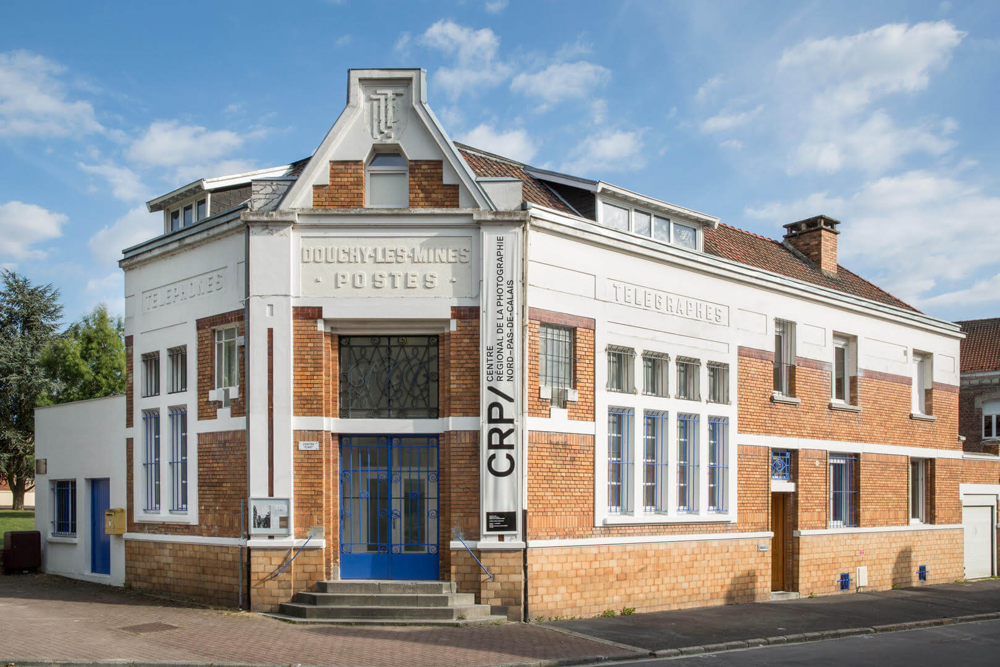
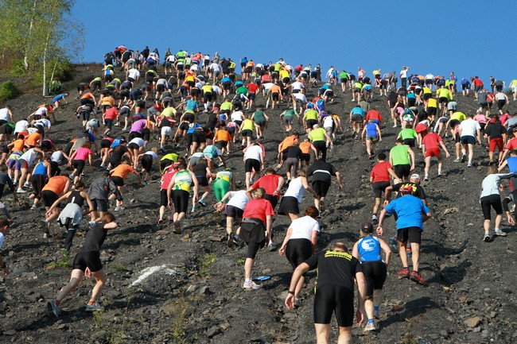

Culture
Explorez notre scène culturelle : musées, théâtres, spectacles et bibliothèque.
Afin de faciliter l'accès de tous ses habitants à une offre de qualité dans le domaine de la lecture publique, la Porte du Hainaut s'est engagée depuis sa création dans une politique volontariste en la matière par :
- La création et l'animation d'un réseau rassemblant les 10 médiathèques déclarées d'intérêt communautaire du territoire autour d'une carte unique, d'un catalogue partagé et d'un protail numérique commun permettant l'accès aux informations suivantes : contacts, horaires, coordonnées, renseignements sur les modalités d'adhésion - à tarification résolument sociale - et sur les programmes d'animations.
- Le soutien aux 27 autres lieux du territoire consacrés à la lecture publique (21 bibliothèques municipales, associatives et points lecture et 6 médiathèques fonctionnant en réseau sur la Vallée de la Scarpe) notamment par le biais de la programmation d'animations gratuites et accessibles à tous.
- La création et la mise en œuvre d'une partothèque (service de prêt gratuit de plus de 1500 partitions aux harmonies, chorales et fanfares référencées sur le territoire communautaire), accueillie au sein de la Médiathèque communautaire de l'Ostrevant à Bouchain.
- La mise en œuvre de formations gratuites et ciblées à destination des professionnels et bénévoles de la Lecture publique du territoire.
- La création et la diffusion d'outils d'animation thématiques en direction des structures dédiées à la Lecture publique sur le territoire.
Le Centre Régional de la Photographie de Douchy-les-Mines vous accueille toute l'année pour des visites ou des ateliers autour de la photographie et de l'image contemporaine. Il se positionne comme un lieu de ressource en matière de recherche et d'éducation à l'image, à travers son centre de documentation ouvert à tous et la co-construction de projets avec les publics.

Les Scènes plurielles proposent aux habitants de découvrir différents univers artistiques par le biais d'une programmation itinérante de spectacles sur l'ensemble du territoire principalement dans des lieux non dédiés au spectacle vivant (salle des fêtes, salle polyvalente, salle des sports, halle couverte) mais aussi dans les cinq salles de spectacle présentes sur le territoire.
Danse, cirque, théâtre et musique investissent tous les territoires de notre communauté d'agglomération.
Le CLÉA, qu'est-ce que c'est ?
Au côté de la DRAC - Direction Régionale des Affaires Culturelles - des Hauts-de- France, du Département du Nord et de l'Éducation Nationale, La Porte du Hainaut coordonne le dispositif Contrat Local D'Éducation Artistique (CLÉA) sur son territoire. Dans ce cadre, elle a accueilli depuis 2015, 3 artistes en résidence chaque année afin qu'ils partagent leur univers artistique et créatif avec les habitants.

Chaque année, plusieurs manifestations culturelles ou sportives sont organisées sur le territoire de La Porte du Hainaut. Vous pouvez consulter les sites de l'Office de Tourisme et d'Arenberg Creative Mine pour les découvrir.
L'ensemble de ces activités culturelles et sportives crée une atmosphère dynamique et conviviale qui contribue à renforcer le lien social au sein de La Porte du Hainaut, offrant ainsi à ses habitants et visiteurs une expérience enrichissante et mémorable.